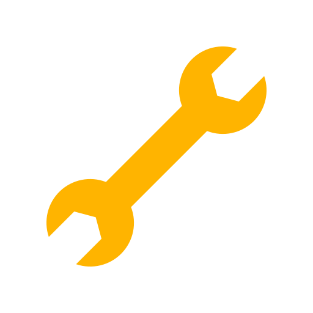

Your Trusted Mobile Mechanic in Rexburg
Stuck at home, work, or on the side of the road? At Swamp Donkey Mobile Mechanic, we bring the garage to you! We understand that car trouble is stressful and inconvenient. That's why we're dedicated to providing honest, reliable, and high-quality auto repair services right where you are. As a proud part of the Rexburg community, we're committed to getting our neighbors back on the road safely and quickly, without the hassle of a traditional repair shop.